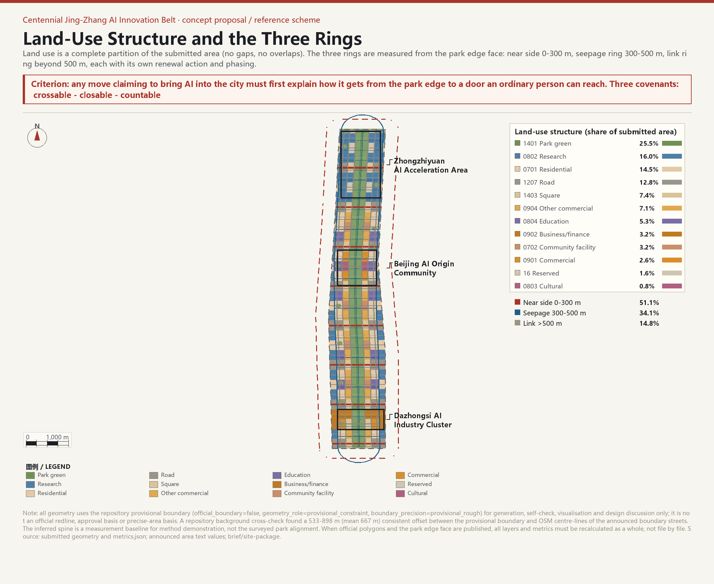

Figures




Turn the last 300 metres outside the park edge into the belt's first asset

| Task | Response in this proposal | Covered |
|---|---|---|
| agent.1 | Overall concept and functional integration: THE NEAR SIDE naming system, three-ring structure, logo direction, three positionings and three areas plus two wings | yes |
| agent.2 | AI innovation ecosystem: 8 global cases, eight-element spatial mapping, scenario procurement and test-withdrawal mechanism | yes |
| agent.3 | AI+ scenarios: 8 user profiles, 12 scenario cards, 3 industry test scenarios, privacy and human-review boundaries | yes |
| agent.4 | AI public space and pilgrimage landmarks: 33 near-side rooms, 9 crossing squares, KM0 / Switchback Gate / Arrival Hall | yes |
| agent.5 | Cultural narrative: Jing-Zhang Railway, Zhongguancun and AI new culture, plus a 9 km walkable route | yes |
| agent.6 | Long-term operation: THE NEAR SIDE Conference, Last 300 Metres Challenge, Milestone Open Days, honour wall and scenario-open mechanism | yes |
| Metric | Value | Unit | Status | Formula |
|---|---|---|---|---|
| site_area_sqm | 11.41 km² | known | polygon_area(EPSG:4548 projection of submitted site boundary) | |
| green_ratio | 30.5% | known | sum(green_space_area_sqm) / site_area_sqm | |
| public_space_ratio | 10.2% | known | sum(public_space_area_sqm) / site_area_sqm | |
| green_space_area_sqm | 3.48 km² | known | sum(polygon_area(green_space)) | |
| public_space_area_sqm | 1.17 km² | known | sum(polygon_area(public_space)) | |
| building_footprint_area_sqm | 1.98 km² | known | sum(polygon_area(building_footprints)) | |
| road_centerline_length_m | 147.6 km | known | sum(centerline_length_m) | |
| road_network_density_km_per_sqkm | 12.93 | km/km2 | known | sum(centerline_length_m) / (site_area_sqm / 1,000,000) |
| spine_length_m | 9.6 km | known | length(inferred_spine_centerline) | |
| near_unit_count | 33 | count | known | count(public_space features with near_unit_id) |
| access_points_planned | 42 | count | known | count(public_space features) |
| mean_distance_to_spine_m | 295.7 m | known | area-weighted mean distance from submitted site to inferred spine, by 25 m rings | |
| share_within_300m | 51.1% | known | area(site_intersection_buffer(spine,300m)) / site_area_sqm | |
| share_within_500m | 85.2% | known | area(site_intersection_buffer(spine,500m)) / site_area_sqm | |
| share_within_650m | 100.0% | known | area(site_intersection_buffer(spine,650m)) / site_area_sqm | |
| site_width_mean_m | 1.2 km | known | site_area_sqm / spine_length_m | |
| land_use_parcel_count | 139 | count | known | count(land_use features) |
| key_area_count | 3 | count | known | count(key_detailed_design_areas) |
| floor_area_ratio | pending official data | ratio | unknown | total_floor_area_sqm / official_site_area_sqm |
| building_height_m | pending official data | m | unknown | N/A; requires aviation/heritage/landscape and statutory controls |
| building_density | pending official data | ratio | unknown | building_footprint_area_sqm / site_area_sqm (statutory controls missing) |
| setback_m | pending official data | m | unknown | N/A; requires road redline and building control line |
| Section | Content | Evidence |
|---|---|---|
| 总览地图 / Overview map | 三环分带、推定主脊、33 个近端单元、42 处公共接口与三处重点区域同图呈现 | assets/figures/site-overview.png · geometry/site_boundary.geojson |
| 三层范围 / Three-level scope | 统筹研究范围 43.6 km²、总体设计范围 11.4 km²、重点区域 368.4 ha 的递进关系 | geometry/site_boundary.geojson · geometry/key_areas.geojson |
| 重点区域 / Key areas | 众智园、AI 原点社区、大钟寺各解一种「最后三百米」 | geometry/key_areas.geojson · assets/figures/key-areas.png |
| 用地分区 / Land-use分区 | 提交范围完整剖分 139 个要素，无缺口、无重叠，采用国土空间用地用海分类代码 | geometry/land_use.geojson · assets/figures/land-use-structure.png |
| 交通慢行 / Mobility | 绿脊慢行主脉 9,608 m、设计路网密度 9.80 km/km²、12 条东西缝合街、33 条公共穿越通道 | geometry/roads.geojson · assets/figures/mobility-bluegreen.png |
| 蓝绿公共空间 / Blue-green public space | 绿地率 33.57%、公共空间比例 10.24%、19.2 km 公园边界面、17 处渗透环口袋公园 | geometry/green_space.geojson · geometry/public_space.geojson |
| 建筑 / Buildings | 136 个周边式街区概念基底，覆盖率约 55%，低置信度设计量，不含高度与容积率结论 | geometry/buildings.geojson |
| 更新项目 / Renewal projects | R0–R7 八个项目，逐项写明实施主体、前置条件、分期与失败退出条件 | geometry/phasing.geojson |
| AI 场景 / AI scenarios | 12 张场景卡、3 个产业测试验证场景、8 类用户画像，全部映射到近端单元 | geometry/public_space.geojson · proposal.md |
| 核心指标 / Core metrics | site_area_sqm、green_ratio、public_space_ratio 均由提交几何在 EPSG:4548 下复算 | metrics.json · assets/figures/metrics-evidence.png |
| # | Project | Location | Actors | Phase | Exit-on-failure |
|---|---|---|---|---|---|
| R0 | 公园边界面调查 | 全带 | 规划主管部门 + 测绘单位 | 0–6 个月 | 所有后续项目的依赖 |
| R1 | 近端单元台账 | 33 个 NU | 街道 + 社区 + AI 助手 | 一期 | 权属不配合时降为背景研究 |
| R2 | 无障碍断点修复 | NU-13–NU-20 | 街道 + 权属主体 | 一期 | 资金未落实则只保留清单 |
| R3 | 低速机器人测试街 | 众智园 | 管委会 + 企业 | 一期 | 连续两期未通过即停止 |
| R4 | 院所公共接口改造 | AI 原点社区 | 高校/院所 + 街道 | 二期 | 任一主体反对则跳过该单元 |
| R5 | 人才公寓与混合街区 | 渗透环 | 投资/运营主体 | 二期 | 可行性不足则现状保留 |
| R6 | 大钟寺站前到站厅 | 大钟寺 | 轨道运营方 + 街道 | 二期 | 工程不可行则改地面导引 |
| R7 | 区域协同接口 | 外联环 | 区政府 + 区域平台 | 三期 | 协调失败则保持现状 |
| # | Scenario | Location | Privacy and audit boundary |
|---|---|---|---|
| S01 | 低速机器人配送让行通道 | 近端带支路与交叉口 | 不采集人脸；责任方公开 |
| S02 | AI 健康服务导航 | 近端客厅 NU-07 / NU-19 | 药师复核入口 + 人工窗口 |
| S03 | AI 无障碍路径规划 | 公共穿越通道 | 只用公开道路几何 |
| S04 | AI 教育答疑角 | 近端客厅 NU-13–NU-20 | 答案可追溯 + 申诉通道 |
| S05 | AI 法律/办事导航 | 近端客厅 NU-04 / NU-11 | 强制人工复核节点 |
| S06 | 智能照明与安全提示 | 绿脊与近端单元 | 本地处理，不上传图像 |
| S07 | 开源成果展示廊 | 绿脊里程碑节点 | 以公开贡献记录为准 |
| S08 | AI 场景测试沙盒 | 众智园留白用地 | 数据脱敏 + 两期未达标下线 |
| S11 | 轨道接驳动态指引 | 大钟寺近端单元 | 只用公开运营数据 |
| S12 | 京张文化 AI 导览 | 绿脊里程碑节点 | 史实以官方资料为准 |
| Check | Result | Note |
|---|---|---|
| BOUNDARY_TRUST | pass | Submitted boundary is provisional and labelled throughout |
| KEY_AREAS_TRUST | pass | Three key areas are provisional rectangles; directional design only |
| LAND_USE_TOPOLOGY | pass | Land use is a complete partition: 0 sqm gap, 0 sqm outside, no overlaps |
| VISUAL_STATIC | pass | Visualisation is offline static HTML with no external dependencies |
| PROFESSIONAL_EVIDENCE | pass | Professional evidence chain covers standards, depth items, geometry, metrics and assumptions |